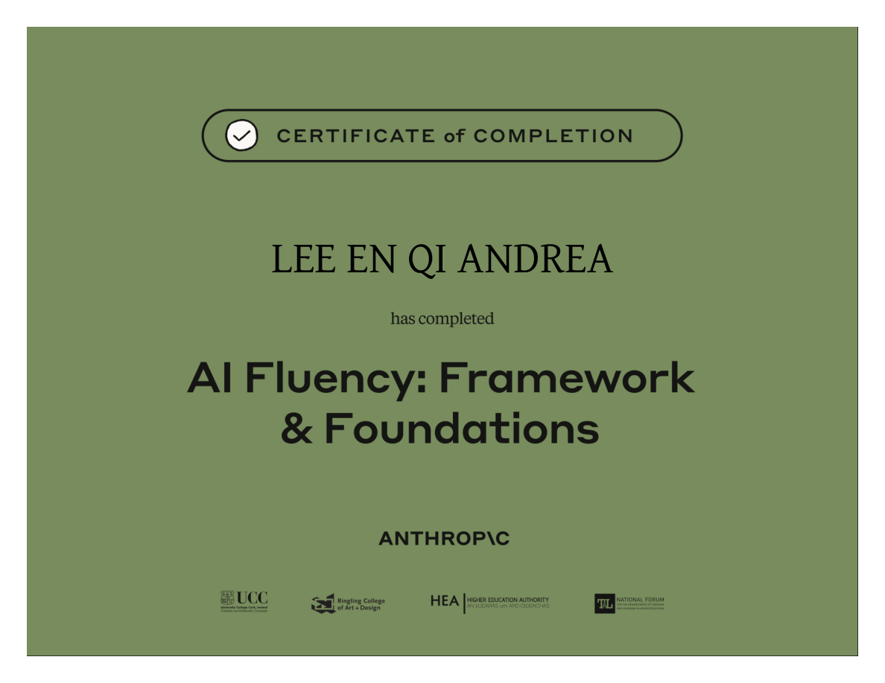
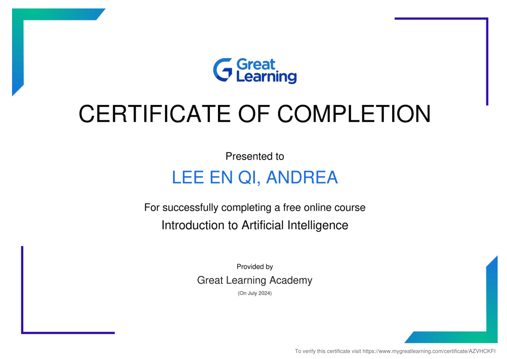
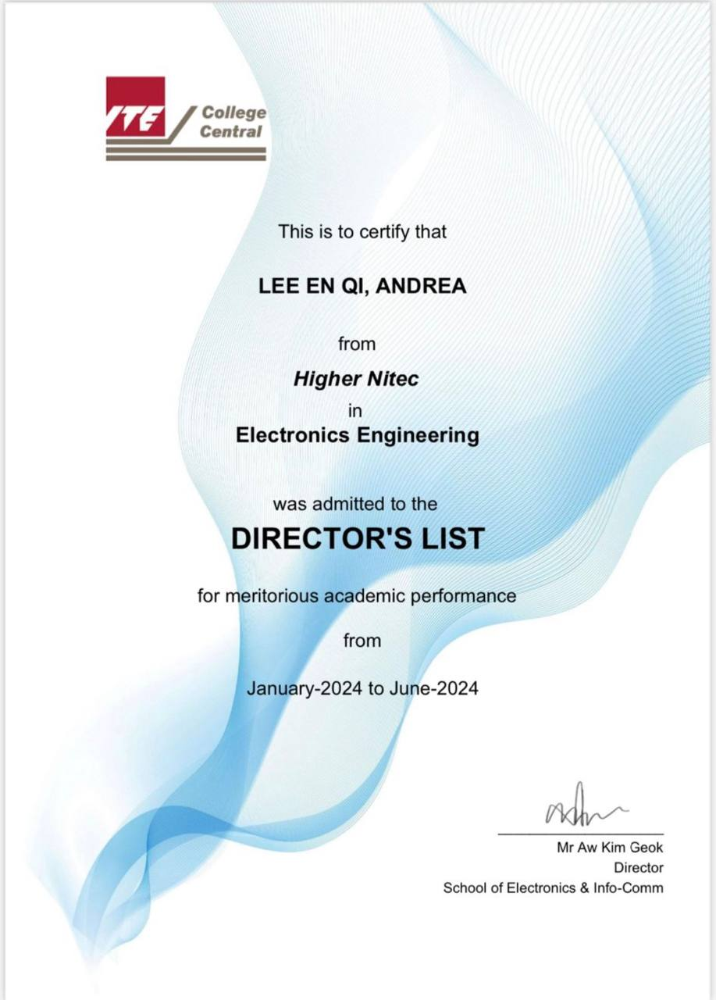
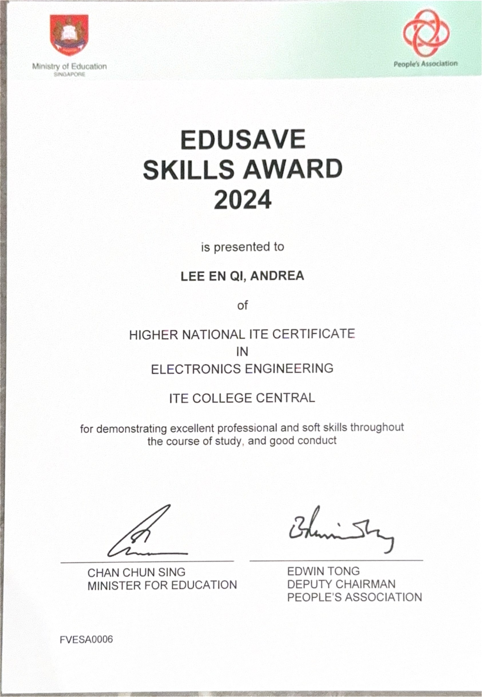
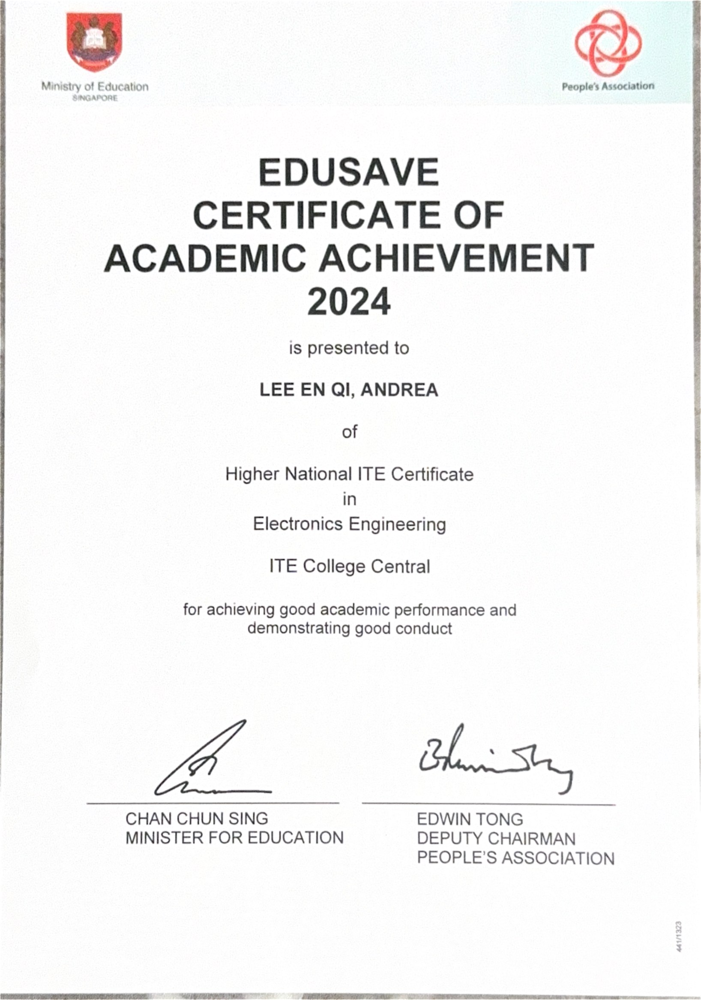
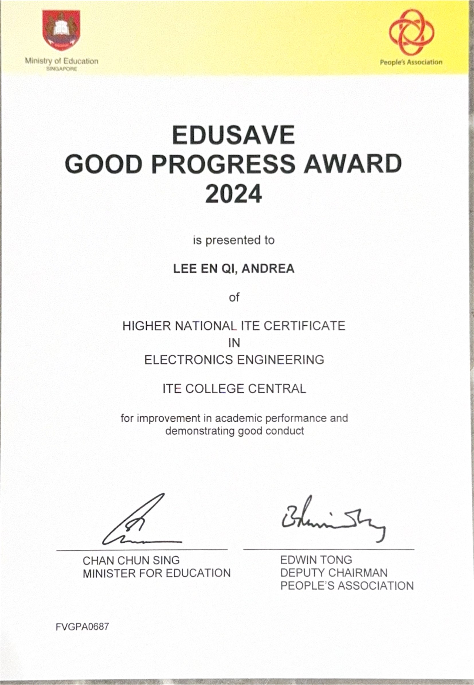
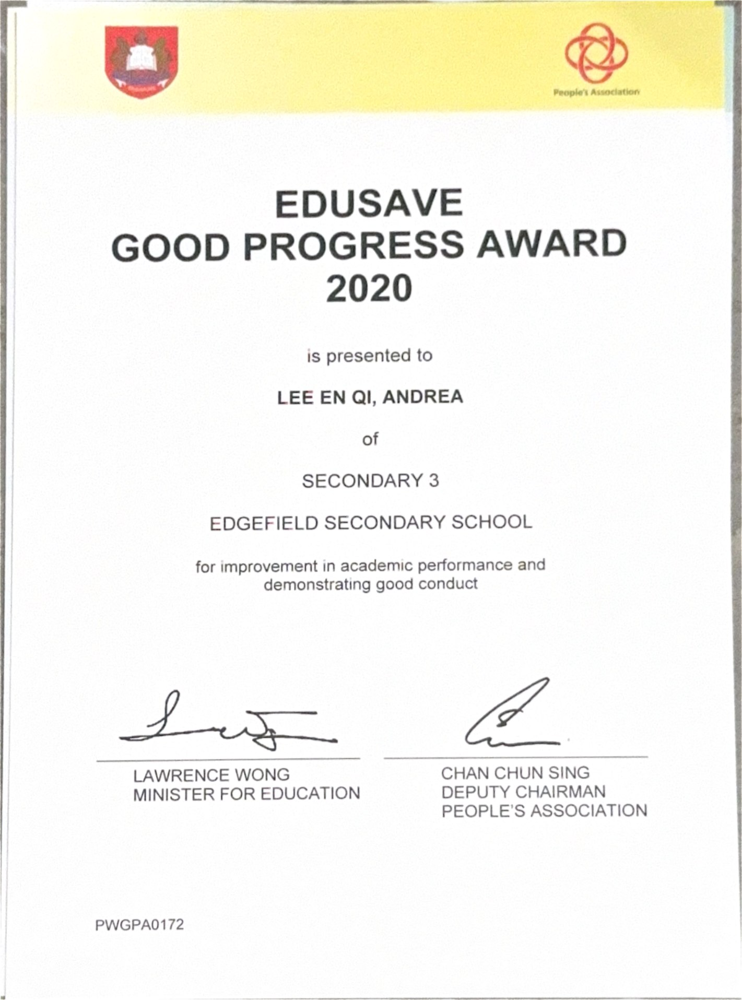

CERTIFICATE · Anthropic
AI Fluency: Framework & Foundations
Certificate of completion in AI fluency foundations.
View certificate ↗MY CERTIFICATION & ACHIEVEMENTS

CERTIFICATE · Anthropic
Certificate of completion in AI fluency foundations.
View certificate ↗
CERTIFICATE · Great Learning Academy · July 2024
Completed an introductory course in artificial intelligence.
View certificate ↗
ACADEMIC RECOGNITION · ITE College Central · Jan–Jun 2024
Recognised for meritorious academic performance in Higher Nitec Electronics Engineering.
View image ↗
AWARD · 2024
Recognised for professional and soft skills demonstrated during Higher Nitec studies.
View image ↗
AWARD · 2024
Recognised for academic performance and good conduct.
View image ↗
AWARD · 2024
Recognised for improvement in academic performance and good conduct.
View image ↗
AWARD · 2020
Recognised for improvement in academic performance and good conduct at Edgefield Secondary School.
View image ↗Interested in my work?
Let's get in touch ↗